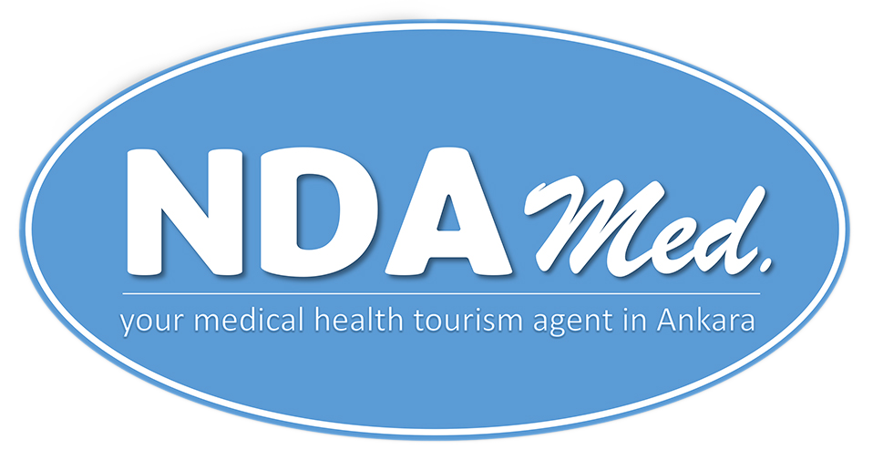

2024 yılında Ankara da kurulmuş küçük bir aile şirketiyiz. Ankaranın bir çok açıdan sağlık turizmi sektörüne sunabilecek büyük katkısı olduğunu düşünüyoruz ve bu yolda ilerliyoruz. Sahip olduğumuz sosyal ağımızı yurtiçi ve yurtdışından bizi tercih eden misafirlerle buluşturmak istiyoruz.
Doğru hastane, iyi otel ve başarılı transfer hizmeti sunuyoruz. Sadece bir sağlık turizm acentesi olarak değil, misafirlerimizin şehirde kendilerini rahat hissetmeleri için onlara aynı zamanda adeta bir asistanlık hizmeti veriyoruz.
Bizi diğer acentelerden farklı kılan şey, kendi sağlığımız söz konusu olduğunda iyi sağlık hizmeti almak istediğimiz zaman ne yapıyorsak, misafirlerimize de aynı şekilde davranıyoruz.
NDA Med. Sağlık Hizmetleri olarak yurtiçi ve yurtdışından saç ekimi ve dental estetik için gelen tüm misafirlerimize eşsiz bir deneyim sunuyoruz. Ayrıca Türkiye’nin başkenti Ankara’da sizlere ulaşım hizmeti ve konaklama fırsatı sunuyor, ülkemizde bulunduğunuz süre zarfında size kendinizi evinizde hissettirecek rahatlığı sağlıyoruz.
Özellikle operasyon ve sonraki süreç hakkında birçok soru işareti olan misafirlerimize aşağıdaki garantileri sunmayı kendimize bir görev bildik:
Sağlık turizm sertifikalı hekim ve uzmanlar
%100 steril ortam
Operasyon/işlem sonrası takipler (doktor/uzman danışmanlığı ile)
Kaliteli ve güvenilir hizmet anlayışı
İhtiyaca göre ek hizmetler
Merhaba. Benim adım Hatice Barış. NDA Med.'in yönetim kurulu üyesi ve iletişim sorumlusuyum. İşlemleriniz ve seyahat planınızla ilgili bütün bilgileri size ben sunuyorum. Ayrıca diğer sorularınız için benimle irtibata geçmekten çekinmeyin. NDA Med. ailesi olarak ekibimize güvendiğiniz için size şimdiden teşekkür ederim.
Uzman doktor sayısı yüksek, daha hızlı randevu imkanı, az trafik sayesinde her yere hızlı erişim ve merkezi konumu sayesinde zengin turistik noktalara daha yakın olması gibi birçok sebepten dolayı Ankara’yı tercih edebilirsiniz. Ülkemiz dünyanın merkezinde bulunuyor diyebiliriz ve birçok farklı açıdan ilgi odağı olup her yıl milyonlarca turist ağırlıyor. Başkent Ankara ise Türkiye’nin merkezinde bulunuyor ve böylece her kesime hitap eden turistik tesisleriyle Ankara’da ziyaret edilebilecek şeyler listesinde başta Anıtkabir, Ankara Kalesi, Eski Meclis, Kocatepe Camii ve birçok müze geliyor. Bunların dışında doğasıyla da ünlü başkentimizde Eymir Gölü ve Kızılcahamam ormanları gibi farklı doğa harikasını içinde barındırıyor.
Alışveriş severler içinse Ankara adeta bir cennet. Kentte toplamda 32 adet AVM bulunuyor ve size eşsiz bir alışveriş deneyimi sunmak için sizleri bekliyor. En iyi AVM’ler için bize ulaştığınız formu doldururken tavsiyelerimizi talep etmeyi unutmayın!
Ayrıca merkezi konumu sayesinde Ankara’ya yakın olan birçok turistik yer mevcut. Sıcak mevsimlerde Ankara'nın kuzeyinde bulunan Akçakoca plajı, lüks otelleri ve leziz yemekleriyle misafirlerine eşsiz bir deniz tatili sunuyor. Dileyenler için uygun fiyatlarla havayoluyla ülkemizin güneybatı yönünde bulunan Antalya, Muğla (Bodrum) veya Izmir (Kuşadası, Çeşme) gibi yerlere de kolayca ulaşım sağlanabilir. Bunların dışında Nevşehir Kapadokya’da Peribacaları ve balon turu isteyenlere Ankara’dan sadece iki saatte ulaşım sağlanabiliyor. Kış aylarında ise Ankara’ya yakın Ilgaz Dağı, Kartalkaya, Erciyes veya Palandökende bulunan modern kayak merkezlerinde kayak keyfi sürebilirsiniz. Daha gurme bir tatil yapmak isteyenler ise ülkenin güneydoğusunda yer alan Gaziantep veya Şanlıurfa gibi yerleri tercih edebilir. Ayrıca yemekleri de dünya çapında değer gören yemekler arasındadır. Yeşili seven misafirlerimizi ise Karadeniz bölgesinde yer alan Trabzon, Rize gibi şehirlerde yüksek rakımda, şehrin yoğunluğundan uzak bir doğa tatili bekliyor. Ziyaretiniz sırasında Türkiye’de gezebileceğiniz ufak bir gezi rehberi için tıklayın!
Yukarıdaki sebepler Ankara’ya gelmeniz için sadece birkaçı. Söz konusu sağlık olunca Ankara’da hizmet alabilecek hekim ve sağlık uzmanı sayısı son derece yüksek. Ayrıca her yıl Türkiye’nin en değerli üniversitelerinden mezun olup başkentimizde cerrah olarak hizmet veren birçok hekim bulunuyor. Ülkemizi yurtdışında da temsil eden ve eğitim veren hekimlerimizden hizmet alabilmek için bize ulaşın. Sakinliğiyle bilinen, kara ve havayoluyla kolay ulaşılabilir ve dünyada az bilinen başkentler listesinde üçüncü sırada yer alan Ankara’da sağlık hizmeti almak için sizi de bekliyoruz! 10 Not So Popular Capital Cities | Touristically (thetouristically.com)